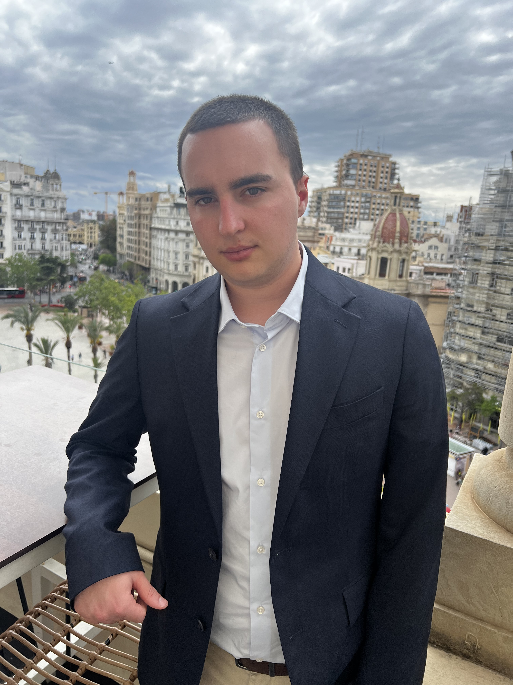

Perfil
Profesional con 2+ años de experiencia demostrable. He trabajado para un despacho de abogados realizando tareas como administrativo y de gestión informática. He realizado todo tipo de trámites ante organismos públicos de la administración y judiciales. Gestión de agenda y atención al cliente. Capacidad de adaptación, eficiente y organizado.
Experiencia Laboral
- Informático y Administrativo en un despacho de abogados (2021-2023)
- Mantenimiento Informático en Clínica Oftalmologica
Mantenimiento informático de equipos y de programas de gestión del despacho. Optimización de los sistemas de clasificación de los archivos y correo. Diseño de páginas web y tarjetas de visita.
Gestión general de equipos informáticos instalados, y con funciones de tanto mantenimiento como de enseñanza a usar de manera optima los recursos aportados en la clínica. También se asistió brevemente en la renovación de los sistemas de telecomunicaciones.
Formación avanzada
- Idiomas
- Conocimientos informáticos
- Uso extensivo de lenguajes de marcas para la creación y mantenimiento de páginas web (HTML, CSS, Java Script).
- Conocimientos básicos de gestión de servidores.
- Microsoft Office (Word, Excel, Outlook, Power Point).
- Adobe Acrobat, Photoshop y edición de Video
Inglés (bilingüe), Español (nativo).
Python (4 años), Java (2 años), R (2 años).